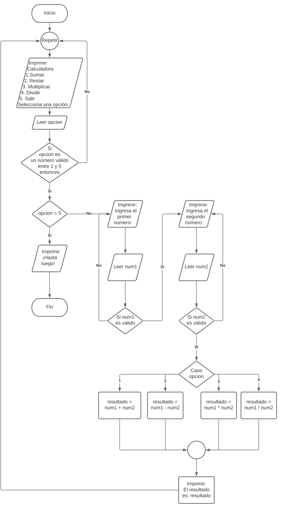

Enunciado
A continuación, se le pide:
- Cree una calculadora con diagrama de flujo utilizando las estructuras correspondientes de iteración, condición y secuencia.
- Además, deberá identificar los operadores a utilizar y reflejar adecuadamente las operaciones de entrada y salida de datos.
- La calculadora deberá recoger 2 números para efectuar una operación. La calculadora deberá tener un menú donde las opciones serán:
- Sumar.
- Restar.
- Multiplicar.
- Dividir.
- Salir.
Además, la calculadora ha de detectar fallos como que, por ejemplo, si ingresa un número que no vaya de 1 a 5 en el menú, debe devolver al menú para elegir un número correcto. Si ingresa como números a operar una letra en vez de un número, debe dar error y pedir que ingrese un número.
Actividad asociada al CE1.1, CE1.4 y CE1.5
- CE1.1 Describir las estructuras secuencial, condicional y de iteración que se utilizan para agrupar y organizar las acciones de un programa.
- CE1.4 Identificar los operadores que se utilizan para hacer los cálculos y operaciones dentro de un script.
- CE1.5 Citar las instrucciones proporcionadas por el lenguaje de guion para realizar operaciones de entrada y salida de datos, de acuerdo a las especificaciones técnicas del lenguaje.
Calculadora
CE1.1 Descripción de las estructuras de control en programación:
- Estructura Secuencial: La estructura secuencial es la forma más básica de agrupar y organizar acciones en un programa. Consiste en una secuencia de instrucciones que se ejecutan una tras otra en orden lineal. Cada instrucción se ejecuta solo después de que la anterior haya finalizado. Es la estructura por defecto en la mayoría de los lenguajes de programación, ya que sigue el flujo natural de las acciones.
- Estructura Condicional: La estructura condicional permite tomar decisiones en función de una condición. Se evalúa una expresión booleana que resulta en verdadero o falso, y en función de eso, se ejecuta un bloque de instrucciones específico. La estructura condicional más común es la instrucción "if-else" (si-sino), que permite ejecutar un bloque de instrucciones si se cumple una condición y otro bloque si no se cumple. También existen variantes como "if-else if-else" (si-sino si-sino) para evaluar múltiples condiciones consecutivas.
- Estructura de Iteración: La estructura de iteración, también conocida como bucle, permite repetir un bloque de instrucciones varias veces hasta que se cumpla una condición de salida. El bucle más común es el bucle "while" (mientras), que ejecuta un bloque de instrucciones mientras una condición sea verdadera. Otro bucle común es el bucle "for" (para), que se utiliza para recorrer una secuencia de elementos, como una lista o un rango de números, ejecutando un bloque de instrucciones para cada elemento.
CE1.4 Operadores para cálculos y operaciones en un script:
Los operadores son símbolos o palabras clave utilizados para realizar cálculos y operaciones en un programa. Algunos operadores comunes incluyen:
- Operadores Aritméticos: Permiten realizar operaciones matemáticas básicas. Ejemplos: suma (+), resta (-), multiplicación (*), división (/), módulo (%), etc.
- Operadores de Comparación: Permiten comparar dos valores y devuelven un valor booleano (verdadero o falso). Ejemplos: igualdad (==), desigualdad (!=), mayor que (>), menor que (<), mayor o igual que (>=), menor o igual que (<=), etc.
- Operadores Lógicos: Permiten combinar expresiones booleanas y realizar operaciones lógicas. Ejemplos: AND lógico (&&), OR lógico (||), NOT lógico (!), etc.
- Operadores de Asignación: Permiten asignar un valor a una variable. Ejemplo: asignación (=).
- Otros operadores: Dependiendo del lenguaje de programación, pueden existir operadores específicos para operaciones más complejas, como desplazamiento de bits, operaciones sobre cadenas, etc.
CE1.5 Instrucciones para entrada y salida de datos en un lenguaje de programación:
Las instrucciones para entrada y salida de datos pueden variar según el lenguaje de programación, pero a continuación se presentan algunas instrucciones comunes:
- Entrada de Datos: Permite recibir datos desde el usuario o desde una fuente externa.
- En muchos lenguajes, se utiliza la función "input" para solicitar al usuario que ingrese datos desde el teclado.
- Algunos lenguajes también proporcionan funciones específicas para leer datos de archivos, bases de datos u otras fuentes externas.
- Salida de Datos: Permite mostrar información o resultados en la pantalla o en un archivo.
- En muchos lenguajes, se utiliza la función "print" para mostrar texto o el valor de variables en la consola o en la salida estándar.
- También se pueden utilizar funciones específicas para escribir datos en archivos, bases de datos u otras salidas externas.
Es importante tener en cuenta que las instrucciones exactas y la sintaxis pueden variar según el lenguaje de programación utilizado. Es recomendable consultar la documentación o las especificaciones técnicas del lenguaje específico para obtener información más precisa sobre las instrucciones de entrada y salida de datos.